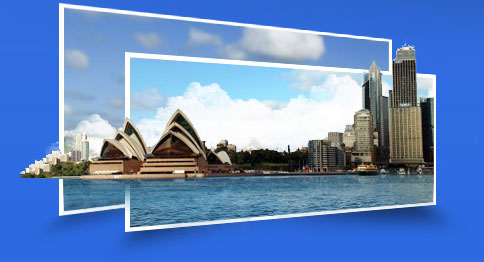

- 澳大利亚网球公开赛，是网坛顶级四大满贯赛事之一，自1905年创办至今，已有一百多年的历史。澳网公开赛总奖金高达1900万澳元。
- 2014年，澳网官方指定旅游运营商—中青旅，与您相约墨尔本，尽享澳网嘉年华。

【澳网观赛+国航直飞】澳大利亚8日畅游绿岛大堡礁
- 出发日期：1月15日 21988元/人
- a、亲临澳网赛场，感受国际顶级赛事的高端大气上档次，邂逅心仪的网球明星
- b、一生必达：大堡礁+大洋路+悉尼歌剧院
- c、城市畅游：悉尼+墨尔本+凯恩斯
- 蜿蜒于悬崖顶和沙滩的大洋路，位于墨尔本西南，是一条全长300公里的海滨公路，有
- 着苍翠繁茂的热带雨林和巍峨壮观的十二使徒岩，驾车奔驰在大洋路上，沿途奇景跌出，
- 是一次又一次惊奇之旅的组合，新近开辟的乘直升飞机观赏大洋
- 路全景，无疑又是另一角度的探险。
- 大洋路一线最著名的景点要数十二门徒，所谓门徒就是海岸边
- 高高的石灰岩柱，它们由海浪拍打而成，形状各异，最高可达
- 45米。这些岩石也无法永久地伫立，2005年和2009年都分别
- 倒了两个“门徒”，预计在50年内十二门徒将会消失。